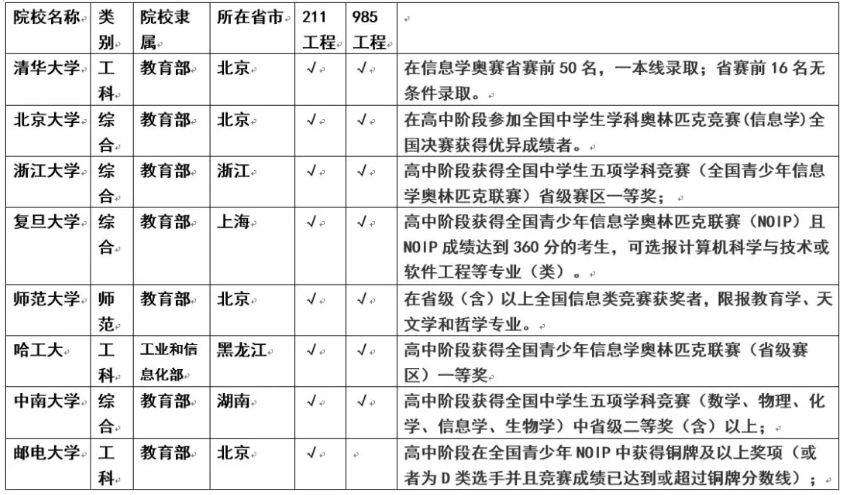

常见问题¶
学编程的好处¶
包含学习上，生活中，以后的工作，以及实际例子
编程其实是一种思维，是一种工具，对孩子来说是一种综合能力的展现和提高，让孩子从小学习编程至少有三个层面的好处
第一层面：在人工智能时代，编程是每一个孩子必备的基本能力
在美国，编程已经成为孩子继阅读、写作、算术这三项基本能力外所需掌握的第四项必备技能。
不仅仅是美国，在英国、德国、日本等发达国家，少儿编程要么已经被列入幼龄阶段必修课，要么已经成为家长最火爆的需求。
我们并不希望，孩子长大之后，跟不上他们那个时代的变化。
而我们更希望，孩子可以与时代同步，从容生活乃至引领时代。
好比英语是通向世界的语言，编程就是未来的通用语言，未来的社会必定是科技社会，没有编程思维，都没法操控电器，跟现在不会用遥控器一样。
第二层面：编程能够提升孩子各方面的能力，有助于学习
- 能够强化孩子的逻辑思考，抽象思考能力，孩子在学习编程的过程中，思维会变得活跃，敏捷、严谨、完整；处事善变，不死板。
- 机器只明白对和错，没有“大概”，“也许”，孩子在过程中会更加专注细心和耐心，改掉注意力不集中的毛病；
- 帮助孩子整理信息，吸收融合能力；
- 训练孩子想象力和解决问题能力；
- 是一种新的表达方式，新的学习方法，会让孩子变得更加自信。
第三层面：学习编程对孩子升学有重大帮助
浙江省已经于2017年将以编程为核心的信息技术学纳入了高考体系。现在的小学生未来高考的时候，编程一定是选择之一。
另外，青少年信息学奥林匹克竞赛受到越来越多高校招生的青睐，在清华、北大等高校自主招生的条件里，最大的比重就是科技和创新能力。
表：2018年各高校自主招生报名条件

而且，在计算机方面的特长，对于孩子申请国外的大学非常有帮助。如果要出国深造，申请世界名校，会编程就是最大的利器。杭州二中高中女生郭文景，高一时就获得了全国青少年信息学奥林匹克联赛(浙江省赛区)一等奖。曾受麻省理工邀请参加比赛，获得北美编程邀请赛第二名，本科被哈佛大学录取。在美国，她还亲自为外国的小孩进行编程授课。
学编程的其他好处
各类工作对编程技能的要求越来越高
工作中，从战胜国际象棋选手到驾驶飞机，再到进行股票市场的交易，计算机在现代生活的各个领域无孔不入。可孩子尚未对这项技术的理解和使用做足准备。
人类将进入人工智能的伟大时代，人工智能在创造巨大价值的同时也会取代很多领域的工作岗位。未来15年，50%的人类工作将会被人工智能所取代，编程会变得越来越重要。如果让孩子从小就学编程，这会让孩子的未来充满了更多的可能。
来自一位博士研究员的话：
“这都不用论证了。学习编程，不一定就能成编程天才或者Geek。但那种思维模式能影响孩子一辈子。现在咱搞研究都知道，这年头不会编程似乎都不能搞研究了。动不动就大数据什么的。这是一种趋势，计算机语言就是一门外语，迟早都要普及的。
编程的思维方式跟玩乐高，搭积木没什么差别。就是模块化的思路。将复杂的目的，分解成一步步简单的步奏，然后将这些步奏有效地组合起来。这是啥？难道不就是少儿编程的设计目的吗？
会不会编程对实验设计可能没什么影响。但是数据总结和分析的时候影响很大啊。尤其是当你需要处理几千张看上去没什么差别的图片的时候。”
学习编程，孩子不再沉迷于游戏
科技飞速发展对人们生活最直接的影响就是：手机。现在，手机是每个人的必备品，孩子也不例外。但是，这就面临很大的隐患：孩子有了手机可以更好的联系，但是手机里有各种游戏，会影响孩子的学习，甚至会沉迷于游戏。面对这样的困扰，很多家长表示心有余而力不足。
但是，编程可以让孩子将对游戏的沉迷转换为对游戏开发的探索。孩子可以参与游戏的开发设计，为游戏编程，从而对游戏有一个全新的认识。
前几天采访一位优秀学员家长时，他向我分享了自家“熊”孩子学习编程之后的变化：
“以前跟我一块出去逛街的时候，一路上都在打游戏，头都不带抬一下的，自从学了编程之后，对玩游戏好像不感兴趣了，更加喜欢研究这个游戏是怎么被设计出来的！太神奇了，我以前怎么说他都戒不掉游戏的...”
玩游戏本质上来说就是一种小孩子的社交行为。他们喜欢玩游戏，但并不是沉迷游戏本身，而是沉迷在打榜过程中获得的成就感，当有更加高级更加能“装逼”的东西出现在同一个社交圈里时，他岂能不喜欢？
试听课内容¶
我们的试听课到底上了些什么内容，可否有视频看下？
根据不同的年龄段，我们给孩子安排了不同类型的试听课。针对6-8岁的小学员，我们会使用简单的编程软件Scratch来教学，利用小孩子对颜色、运动的喜好，利用Scratch这个图形化模块工具，结合孩子的认知水平。让小朋友在图画运动中，学习简单的编程思维逻辑。这不仅仅是一个可以向朋友感到好玩的项目，更是教小朋友，在娱乐中学习编程思想，锻炼理性思维的严密性。
针对L1~L2水平的学员，我们使用了当前最流行的Python编程语言，通过学生最喜欢的战机游戏，激发学生对编程的兴趣和探索世界的好奇心。项目利用到数学中的坐标、速度、频率、条件判断等知识点。编程不仅仅是学习制作游戏，更重要是寓教于乐，让学生了解游戏背后蕴含的数学逻辑和程序原理。
L3的微信好友分析项目，紧密的和生活联系在一起，利用Python这个万能的编程工具，结合统计学概念，分析微信中好友的性别比例。这不仅仅是一个可以向朋友炫耀的项目，更是让学员们感受到编程是每个人都可以学习、应用的一个工具。
如果是对信奥感兴趣的学员，我们就会安排最短路径数量这节体验课，这是一道用数学解起来非常麻烦的题目，但是只要掌握了算法，用编程来解决它又非常的简单。掌握这个思路，能帮助学员更快的去理解同类型的题目，同时加深对数学方法的理解。
相关的视频如下表：
| 年龄 | 编程水平 | 试听课课程 |
|---|---|---|
| 6-8岁 | L0 | Scratch 编程启蒙 |
| 9-10岁 | L1 | Python 趣味编程 |
| 11-12岁 | L2 | Python 趣味编程 |
| 13-15岁 | L3 | Python 微信好友分析 |
| 13-15岁 | L4 | C++ 最短路径数量 |
大纲每个单元和一个级别学完，孩子能有什么提升？¶
我们的课程是以美国CSTA标准为依据设定的，CSTA将6-18岁的小朋友依据编程水平分为5个级别，其中前3个级别是针对小学阶段，是美国学生在小学阶段必须要达到的等级。
依据我们的经验来说，一般一个孩子完成当前阶段48课时的学习，编程水平可以提升对应一个等级，满足CSTA对学生这个阶段编程能力的要求。
| 立乐标准 | L0 | L1 | L2 | L3 | L4 |
|---|---|---|---|---|---|
| CSTA标准 | L1A | L1B | L2 | L3A | L3B |
| 课程 | 48课时 | 48课时 | 48课时 | 96课时 | 192课时 |
注：CSTA标准是全美计算机教师协会针对K-12学生制定的标准。
每个单元主要学习什么？¶
立乐的课程中，每个阶段都有一个对应的目标，比如L2第一单元，目标是学习变量的知识，如何用一个虚拟变量去代表一个真实的值，这个是编程中最基础的概念。除此之外，还有诸如坐标系等数学概念。
在后续的单元中，逐渐加入了编程中非常重要的条件选择、循环、函数、数组等知识，一方面我们在学习计算机如何思考和解决问题，另一方面，我们能够在这些知识的上，引导学员去发挥自己的想象力，创作出自己的作品。
此外，除了编程知识，还会用到各类逻辑思维工具，诸如流程图、脑图的设计，锻炼学员的逻辑思维能力，分析问题的能力，以及最终获得独立解决问题的能力。
详细的单元目标，可以在各个课程大纲中看到。
课程除了以游戏为载体去教学，还有其他方式嘛¶
编程属于STEAM课程，STEAM课程最大的特点是包含了各种跨学科的知识。编程不仅仅是数学与代码，我们的课程是以各种不同的项目类型为载体，除了编程知识，还有绘图、音乐、数学等等内容的结合。
比如，Scratch课程中，我们制作了一系列的动画贺卡，制作了一台音乐播放器，让小猫进行数学计算等等。
小学，初中，高中，学习编程，不同点是什么¶
简单来说，小学阶段和中学阶段学习编程的侧重点差异是比较明显的，小学阶段，学习编程主要是学习如何运用计算思维去解决问题，而初、高中阶段学习编程更多是为了升学做准备。
| 阶段 | 主要目标 |
|---|---|
| 小学 | 计算思维训练，更多的是为未来打下基础 |
| 初中 | 竞赛准备、专业（高考） |
| 高中 | 竞赛（自主招生）、出国 ，直面这个阶段的最重要事情——升学 |
从教育角度看，小学阶段学习编程的核心的理念是把计算机编程看作与阅读、表达、数学等一样的，作为小朋友成长所需的基础技能来培养。
未来的生活中，人们使用数字化设备和软件来处理工作的需要会越来越大。这些变化就需要人们对计算机逻辑有更深的理解，要具备与计算机相近的“计算思维”(Computational Thinking)，并具备与之关联的能力。
初中学，是为信息技术相关专业做准备，如果孩子对人工智能、大数据、物联网等信息技术专业感兴趣，那么不妨在初中阶段就开始学习一些相关的基础知识。在升学（比如高考）、大学阶段轻松领跑。浙江已经将信息技术加入到高考选修科目中，可以为将来选择专业做好准备。
另一个是为了竞赛做准备，我们知道高中信息技术奥赛是目前高校自主招生最重要的参考依据，在初中阶段提前做好准备，更有充分的时间准备，在高中阶段更容易获得更多的竞赛资源，以获取好的名次。
高中阶段，我们建议直接就是针对信奥课程进行突击，争取获取自主招生资格。此外，如果想申请一些国外的大学，那么编程能力是非常重要的一项特长。
不同阶段学员课程学习规划路径¶
依据孩子能力水平，学习不同阶段的编程课程，提高计算思维能力水平。
孩子在生活、学习中都会学到一些计算思维相关的知识，我们经常看到，很多逻辑思维强的孩子，学习编程掌握知识的速度非常快，反过来，学习编程又让孩子的逻辑思维得到进一步的训练。
| 计算思维能力水平 | 推荐课程 | 目标 |
|---|---|---|
| L0 （一般是幼儿园~二年级水平） | Scratch L0编程启蒙 | 提高至L1水平 |
| L1（3~4年级） | Python L1图形化编程 | 提高至L2水平 |
| L2（5~6年级） | Python L2 趣味编程 | 提高至L3、L4水平 |
| L3（7年级以上） | Python L3 科学计算 | 信息技术专业基础 |
| L4（7年级以上） | NOIP L4 信奥课程 | 信奥竞赛 |